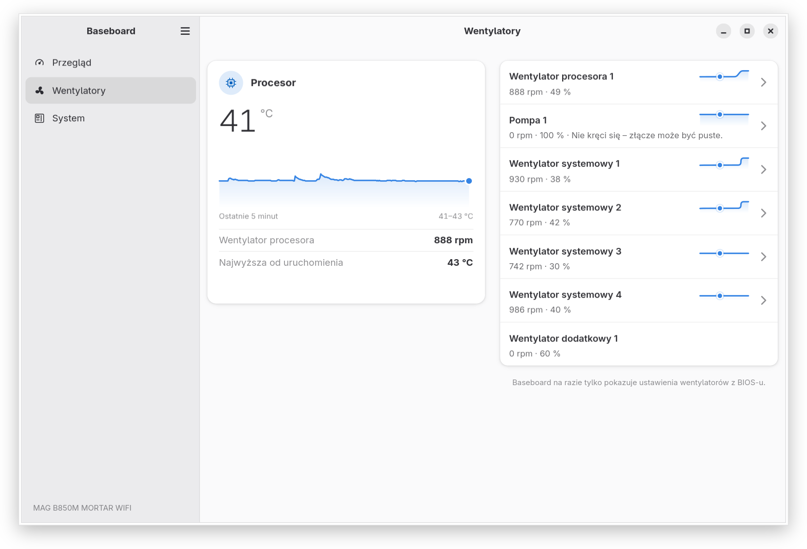
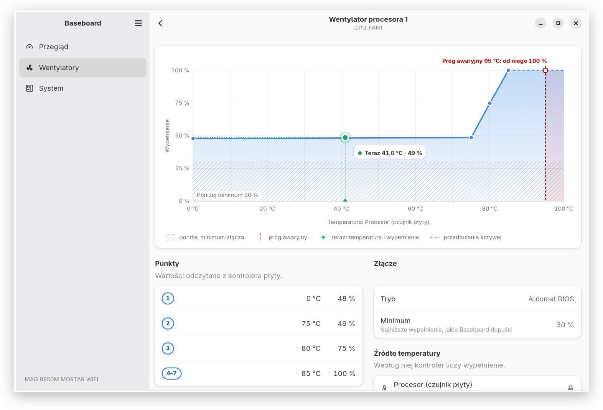
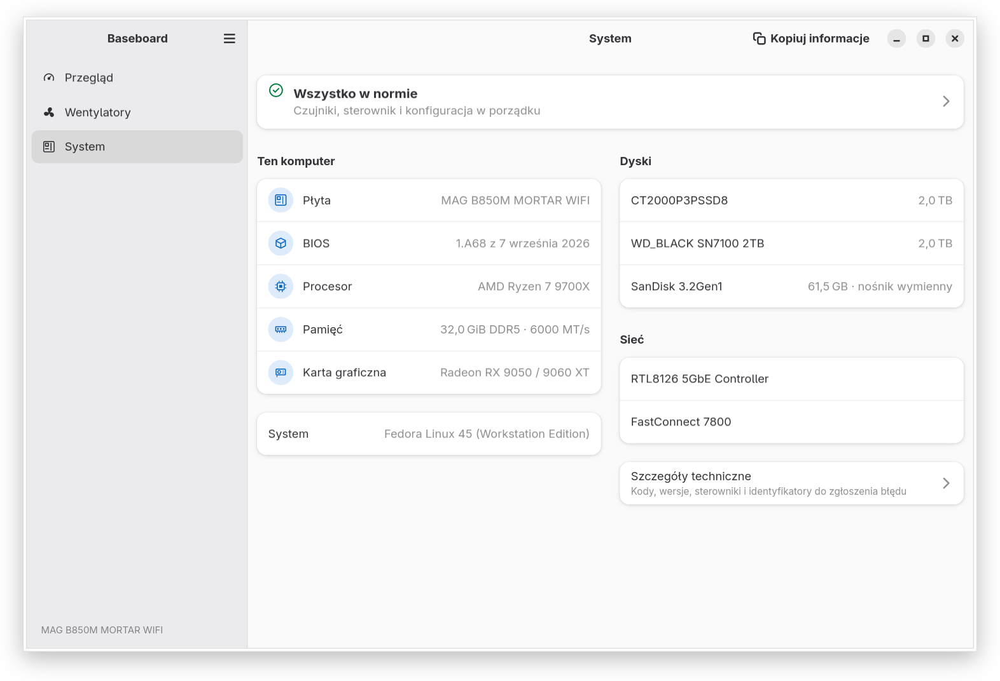

Co pokazuje dziś
Baseboard pokazuje odczyty, krzywe wentylatorów i informacje o systemie, ale jeszcze nie zmienia żadnych ustawień. Obecne wydanie to 0.2.0.
- Przegląd: procesor, kartę graficzną i płytę, każde z temperaturą z ostatnich 5 minut, wentylatory, pamięć i dyski oraz jedno zdanie, czy wszystko jest w normie. Ostrzega, gdy procesor jest bardzo gorący, gdy stanie wentylator procesora i gdy napięcie wyjdzie poza tolerancję.
- Stronę Wentylatory: obroty i wypełnienie każdego wentylatora, nazwanego tak jak złącze na płycie, oraz krzywą, według której płyta nim steruje, gdy sterownik jądra podaje krzywe (zob. Wentylatory a jądro). Ze sterownikiem wydanego jądra pokazuje obroty i temperatury.
- Wszystkie czujniki: każdą temperaturę, obroty i napięcie ze źródłem i zakresem od uruchomienia aplikacji, napięcia z oceną względem tolerancji.
- Stronę System: płytę, BIOS, procesor, pamięć, kartę graficzną i dyski, a szczegóły i stan sterownika wentylatorów o jedno kliknięcie dalej.
- Przycisk „Kopiuj informacje” z tekstem do zgłoszenia błędu, bez numerów seryjnych i adresów MAC.
- Interfejs po polsku i po angielsku.



Jak działa
Czujniki i wentylatory Baseboard czyta wyłącznie przez sterowniki jądra i ich standardowy interfejs hwmon w sysfs, a jeśli jest zainstalowana, przez bibliotekę libsensors. Nie ma własnego dostępu do sprzętu: żadnych portów I/O, /dev/port ani /dev/mem, a z przestrzeni użytkownika nic nie pisze do kontrolera wbudowanego (EC). Działa jako zwykły użytkownik.
To, co dotyczy jednej płyty, czyli nazwy złączy wentylatorów i tolerancje napięć, leży w profilu płyty, w pliku danych. Punktem odniesienia jest część MSI Center dla Windows odpowiedzialna za czujniki i wentylatory.
Wentylatory a jądro
Sterowanie wentylatorami na tych płytach zależy od sterownika jądra nct6683. Baseboard nie sprawdza wersji jądra. Czyta atrybuty sysfs każdego kanału wentylatora i z nich wnioskuje, na co pozwala sterownik; ten poziom widać na stronie System. Od 0.2.0 Baseboard pokazuje krzywe wentylatorów tam, gdzie podaje je sterownik; ze sterownikiem wydanego jądra pokazuje obroty i temperatury. Sterowanie przyjdzie w jednej z kolejnych wersji, a od tego momentu każdy poziom z tabeli odblokuje się sam, gdy jądro go udostępni, bez nowego wydania Baseboard.
| Poziom | Co robi Baseboard | Czego wymaga od jądra | Stan w jądrze |
|---|---|---|---|
| Tylko odczyt | Odczyty i obroty wentylatorów, z wyjaśnieniem, że sterowanie wymaga nowszego sterownika (0.2.0) | Sterownika nct6683 dla układu NCT6687D-R płyty | W obecnych jądrach |
| Tryb ręczny | Stałe wypełnienie dla każdego złącza, ustawiane przez pomocnika systemowego (później) | Zapisywalnych pwmN i pwmN_enable oraz przywracania ich po wybudzeniu | W hwmon-next, drzewie opiekuna podsystemu hwmon; jeszcze nie w wydanym jądrze |
| Podgląd krzywych | Krzywe zapisane w EC i ich źródło temperatury, tylko do odczytu (0.2.0) | Czytelnych pwmN_auto_point* i pwmN_auto_channels_temp | W hwmon-next; jeszcze nie w wydanym jądrze |
| Krzywe w EC | Edycja siedmiopunktowych krzywych w EC; działają też bez aplikacji (później) | Zapisywalnych pwmN_auto_point* | Łatki w recenzji na liście linux-hwmon: wątek v1 |
| Wybór temperatury | Wybór czujnika, za którym idzie krzywa (później) | Zapisywalnego pwmN_auto_channels_temp | Planowane, jeszcze niewysłane |
Łatki w recenzji mogą się zmienić albo nie zostać przyjęte. Jeśli zmieni się ich interfejs, Baseboard się do niego dostosuje.
Praca w jądrze
Obsługa tej płyty w jądrze Linuksa powstaje równolegle z aplikacją, w głównym drzewie jądra.
W wydanych jądrach
Dźwięk
W głównym drzewie, jeszcze nie w wydanym jądrze
hwmon (czujniki i wentylatory)
- Dokumentacja: hwmon: (nct6683) Add MSI B850M to list of tested boards
f9c5d495e22f
W hwmon-next, drzewie opiekuna podsystemu hwmon
hwmon (czujniki i wentylatory)
- hwmon: Add driver for MSI Mystic Light controller voltage sensorsz dokumentacją i wpisem w MAINTAINERS
- hwmon: (nct6683) Remove the 32 mV voltage scale
- hwmon: (nct6683) Report the fan curves of MSI boards with NCT6687D-Rz dokumentacją
- hwmon: (nct6683) Restore manual fan control after resume
- Tested-by: cztery zmiany w sterowniku
msi_mystic_lightprzetestowane na tej płycie
W recenzji na liście linux-hwmon
hwmon (czujniki i wentylatory)
Obsługiwane płyty
Sprawdzona jest jedna płyta: MAG B850M MORTAR WIFI (MS-7E61), rewizja PCB 1. Na innych komputerach Baseboard działa w trybie ogólnym: odczyty są, ale bez nazw złączy płyty i bez sterowania wentylatorami.
Profile kolejnych płyt powstaną wyłącznie z ich instrukcji, publicznych źródeł i testów na sprzęcie. Dopóki przypisanie złączy nie zostanie sprawdzone na danej płycie, jej profil daje odczyty i nazwy, ale nie steruje wentylatorami.
Zgłoś swoją płytę
Załóż zgłoszenie na GitHubie i wklej tekst z System → Kopiuj informacje. Jest w nim model i kod płyty, BIOS, urządzenia hwmon i poziom sterownika wentylatorów, a nie ma numerów seryjnych ani adresów MAC. Ten tekst jest zawsze po angielsku, także przy polskim interfejsie.
Instalacja
Baseboard jest dostępny jako Flatpak. Wydanie na Flathubie będzie rozważane, gdy pojawi się sterowanie wentylatorami.
Z repozytorium bojanowski.me (zalecane)
Repozytorium jest podpisane i wspólne z innymi aplikacjami autora. Aktualizacje przychodzą ze zwykłym flatpak update, a środowisko GNOME pochodzi z Flathuba.
flatpak remote-add --user --if-not-exists flathub https://dl.flathub.org/repo/flathub.flatpakrepo
flatpak remote-add --user --if-not-exists bojanowski https://flatpak.bojanowski.me/bojanowski.flatpakrepo
flatpak install --user bojanowski me.bojanowski.BaseboardZ pliku z wydania
Pobierz me.bojanowski.Baseboard.flatpak z najnowszego wydania na GitHubie i zainstaluj go. Środowisko GNOME Flatpak pobierze z Flathuba. Pakiet zainstalowany w ten sposób nie aktualizuje się sam; nowsze wydanie instaluje się tak samo.
flatpak install --user me.bojanowski.Baseboard.flatpakFlatpak czyta czujniki i informacje o systemie z dostępem tylko do odczytu do bazy udev. Nie widzi konfiguracji lm-sensors systemu, więc jej etykiety i instrukcje ignore nie działają; odczyty płyty i tak są przeliczone i nazwane według profilu. Żeby korzystać z tej konfiguracji, daj aplikacji dostęp tylko do odczytu do całego /etc:
flatpak override --user --filesystem=host-etc:ro me.bojanowski.BaseboardZ piaskownicy Baseboard nie widzi innych programów sterujących wentylatorami i strona System mówi to wprost.
Ze źródeł
Potrzebne są Rust 1.92 lub nowszy, GTK 4.22, libadwaita 1.9 i Meson 1.1.
git clone https://github.com/TomaszBojanowski/baseboard.git
cd baseboard
meson setup build
meson compile -C build
meson devenv -C build ./crates/app/baseboardWłasne budowanie Flatpaka
Manifest korzysta ze środowiska GNOME 51, a zależności Rusta buduje bez dostępu do sieci.
flatpak-builder --user --install --install-deps-from=flathub --force-clean \
build/flatpak build-aux/flatpak/me.bojanowski.Baseboard.json
flatpak run me.bojanowski.BaseboardPlany
Najbliżej: sterowanie wentylatorami
Po podglądzie krzywych z 0.2.0 mały pomocnik systemowy (D-Bus i polkit), jedyny element, który może zmieniać ustawienia wentylatorów, a na końcu tryb ręczny i edytor krzywych. Pomocnik nie może być częścią Flatpaka, więc trafi do osobnego pakietu systemowego. Obowiązują go stałe zasady bezpieczeństwa:
- minimalne wypełnienie dla wentylatora procesora i pompy;
- pompa nigdy nie staje;
- krzywe procesora i pompy osiągają 100 % najpóźniej przy temperaturze awaryjnej;
- złącza w trybie ręcznym wracają pod sterowanie firmware, gdy pomocnik się zakończy albo ulegnie awarii, przed wyłączeniem komputera i gdy temperatura przekroczy próg awaryjny;
- ustawienia działają do następnego restartu;
- sterowanie tylko na płycie, do której pasuje profil, łącznie z rewizją PCB, i tylko na złączach, których zapis sprawdzono na tej płycie.
Do rozważenia
To pomysły bez terminu i mogą się nigdy nie pojawić:
- podświetlenie RGB płyty;
- profile energii i restart do ustawień firmware;
- pomoc przy aktualizacji BIOS-u, bez flashowania z działającego systemu.